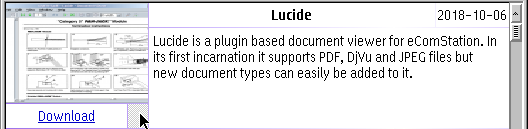
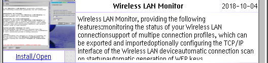
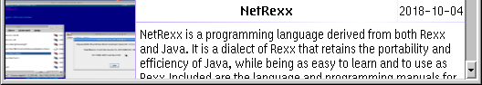
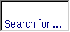
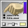
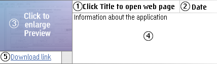
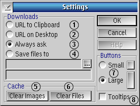

Online Software / 2
Online Software / 2
Download applications
Copyright©
2018,
Jan-Erik L„rka
http://www.xn-lrka-loa.com/
and
https://github.com/OS2World/APP-INTERNET-Online_Software_2
License agreement
License agreement
Copyright¸ 2018, Jan-Erik L„rka
All rights reserved.
Redistribution and use in source and binary forms, with or without
modification,
are permitted provided that the following conditions are met:
1. Redistributions of source code must retain the above copyright
notice,
this list of conditions and the following disclaimer.
2. Redistributions in binary form must reproduce the above copyright
notice, this list of conditions and the following disclaimer in the
documentation
and/or other materials provided with the distribution.
3. Neither the name of "Jan-Erik L„rka" nor the names of its
contributors
may be used to endorse or promote products derived from this software
without
specific prior written permission.
THIS SOFTWARE IS PROVIDED BY THE COPYRIGHT HOLDERS AND CONTRIBUTORS
"AS IS" AND ANY EXPRESS OR IMPLIED WARRANTIES, INCLUDING, BUT NOT
LIMITED
TO, THE IMPLIED WARRANTIES OF MERCHANTABILITY AND FITNESS FOR A
PARTICULAR
PURPOSE ARE DISCLAIMED. IN NO EVENT SHALL THE COPYRIGHT HOLDER OR
CONTRIBUTORS
BE LIABLE FOR ANY DIRECT, INDIRECT, INCIDENTAL, SPECIAL, EXEMPLARY, OR
CONSEQUENTIAL DAMAGES (INCLUDING, BUT NOT LIMITED TO, PROCUREMENT OF
SUBSTITUTE
GOODS OR SERVICES; LOSS OF USE, DATA, OR PROFITS; OR BUSINESS
INTERRUPTION)
HOWEVER CAUSED AND ON ANY THEORY OF LIABILITY, WHETHER IN CONTRACT,
STRICT
LIABILITY, OR TORT (INCLUDING NEGLIGENCE OR OTHERWISE) ARISING IN ANY
WAY
OUT OF THE USE OF THIS SOFTWARE, EVEN IF ADVISED OF THE POSSIBILITY OF
SUCH DAMAGE.
About
About
Online Software / 2
Version 1.2 build 2
The main purpose (beside world dominance ;-) of the application is to
-
Show you updated applications on the desktop without the need of
a web browser
-
List updated and available applications with preview
image and
informative text
-
Let you explore and try more applications you would not
normally
try out on your own
This application need a fully functioning internet connection as it
connect to a site to retrieve list of applications and images
Each application presented to you, use preview
images and information provided by eCSoft/2 (
https://ecsoft2.org
)
Thank you
-
Gabriele Gamba
and
eCSoft/2
(
https://ecsoft2.org
) for the excellent cooperation and the online software catalogue
-
Heiko
Nitzsche
for
Generalized
Bitmap Module
(
GBM
)
-
Chris
Wohlgemuth
for
DrCtrl
for DrDialog
Installation
Prerequisites
This application need support libraries that provide various services
involving window handling, image processing and file downloads.
Window handling
Image processing
File downloads
-
GNU WGet is a network utility to retrieve files with SSL support
(Different authors)
yum install -y wget
or
-
cURL is a command line tool for transferring files with SSL
support (Different authors)
yum install -y curl
Installation
Unpack to a destination folder and create a Program object on the
desktop.
You may want to copy the libraries above to the same folder as this
application.
User interface - Overview
Overview
Titlebar
Toolbar

Application row

Application row

Application row
Titlebar
Titlebar
The
titlebar
of the
main window double
as a progress bar during load
of categories. It appear as a slightly lighter blue (or gray if focus
has been set
elsewhere) area that increase in size as more of the category load.
Toolbar
Toolbar
1
2
3
4 5
6


1. Reload
-
Click the button to
reload
the currently selected
category.
2. Categories
-
The
button display/hide a dropdown menu with the currently
available
software
categories
to choose from.
3. Search for ...
-
Click
in the field and type what you
search
for
on your keyboard with at
least 3 characters.
It
list
information
that match from the category selected.
4. Search results -
The button
display/hide the dropdown menu with
matching search criteria.
5. Clear search -
The button
clear
the
search field
.
6. Settings
-
The button
open the
settings
window
to adjust
download options
,
toolbar
button size
and
turn on/off tooltips
.
Application row
Application row
Each row present
one application with Title, Date,
Preview (if available), Information area and Download Link (if
available).

1. Title
-
Clickable
link
to the
application page
at
http://ecsoft2.org
û
2. Date
-
Date
ý
the application was
announced/updated/added
to the site
http://ecsoft2.org
3. Preview
-
Clickable
image
that
open a larger view
ü
of the
presented application
4. Information
-
Summary
of
the
text
that describe the use of the application
5. Download link -
Clickable
link
,
behavior depend on the
application
settings
where option
3 (Always ask)
and
4 (Save files to)
show
a progressbar
during download for each
clicked row
Click on, drag or scroll the
vertical scrollbar to view more applications in the selected category.
Opens the web page in the application set to
handle URLs
National date format as defined on the
computer running the application
The window for the larger preview image can be
resized and closed with a mouse click
Settings
Settings

1. URL to Clipboard -
Copies the URL to the system Clipboard
û
(Default)
2. URL on Desktop -
Create the URL on the desktop
ý
3. Always ask
-
Save the file to a path specified at download
4. Save files to
-
Save the file to the path
ü
specified by the
text field below
Can be selected with the button with 3 dots
5. Clear Images
-
Deletes downloaded preview images (both large and small)
6. Clear Files
-
Deletes downloaded applications and packages
7. Button size
-
Small or Large button size on the toolbar
8. Tooltips
-
Controls whether tooltips should be visible or not
%HOME%\.cache\eCSoft\ECSOFT2.INI
contain settings and application info such as window size and position
To be pasted in web browser by hand or
intercepted by a tool like AutoWGet for download
A
tool like AutoWGet can scan the desktop for URLs
to download
Default path is
%HOME%\.cache\eCSoft\Downloads
Trouble shooting
Trouble shooting
The following pages describe possible problems you may encounter and
what to do
Startup
À
DrCtrl017.dll
Usage
À
Close
unexpectedly
Startup - DrCtrl017.dll
Startup - DrCtrl017.dll
Online Software / 2 complain that it can't find DrCtrl017.dll
-
Find the installation package for DrCtrl 0.1.7 made by
Chris Wohlgemuth with
https://ecsoft2.org
,
download and install it
Usage - Close unexpectedly
Usage - Close unexpectedly
The application window disappear
and close all of a sudden
and/or create odd image file sizes?
-
Delete
%HOME%\.cache\eCSoft\ECSOFT2.INI
if a setting has been corrupted.
-
Did you install
gbm.dll
?
-
System resources may have been exhausted during download of graphics.
Restart your computer.
Related tools
Related tools
html2hlp.cmd (with html2hlp.add)
-
This help file was created with the help of a HTML-style file
that was parsed by html2hlp into a .ipf-file and compiled by ipfc.
Please note that you need to install the OS2TK45 (not only with yum) to
use ipfc.
Helper application for Online Software / 2 (not yet available,
individual features tested)
-
File type detection on magic number
-
Virusscan with clamd
û
(also
as stand alone application)
-
Take action depending on file type detected
-
Unpack and install multiple fonts (system restart required
afterward to use)
-
REXX script launcher of .zip packages and certain files
ý
-
YUM launcher
ü
-
.wpi launcher
-
.exe launcher
-
.rpm launcher
Please send your rexx installation scripts for various tools and
applications to info@ecsoft2.org
with info about
what the script does and how.
Can
auto detect clamd servers available on the network and scan
files without any use of clamscan.exe or clamdscan.exe
There are alot of useful scripts out there
that you sit on, please share them so that the rest of us can use them.
The script will recieve one parameter, the path and file to work with.
Ensure that the script can ask the user for additional information if
needed
and also ANPM if Arca Noae open it up for
useful command line parameters